Entering a match
Reduce unnecessary navigation, make one action clearly primary and keep match preparation connected to getting into the game.
CASE STUDY / FAN-CONCEPT REDESIGN
Reimagining the multiplayer lobby.
An independent redesign of Call of Duty: Modern Warfare 4’s multiplayer lobby on PC, focused on three things players do every session: entering a match, choosing a mode and building a loadout.
SEE THE PAIN POINTS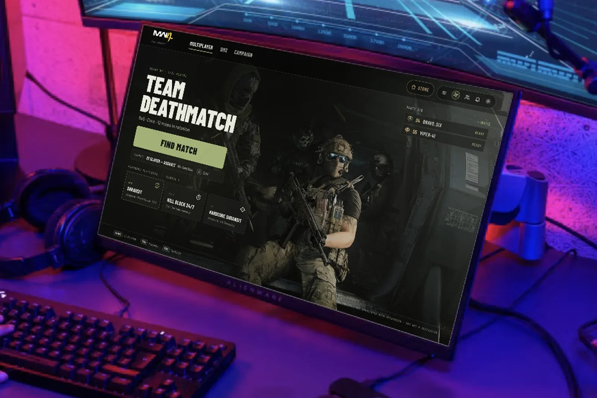
001 / OVERVIEW
Rather than redesign the whole game interface, I focused on the three journeys players repeat most. Everything is designed in MW4’s existing visual language, so the focus stays on the interaction.
Reduce unnecessary navigation, make one action clearly primary and keep match preparation connected to getting into the game.
Make modes easier to find and compare, with a clearer hierarchy and better information about what each playlist is.
Cut menu transitions, show equipment information more clearly and make customizing interactive without losing depth.
PROBLEM
The current lobby adds friction to tasks players repeat every session: finding the right mode, adjusting a loadout and getting into a match. That friction cuts into the player’s sense of control and keeps them in menus instead of the game.
HOW MIGHT WE
Make finding a mode, building a loadout and entering a match faster and more interactive, without losing the feel of the game?
002 / SECONDARY RESEARCH
Modern Warfare 4 community threads, official patch notes and published coverage of the menus.
“Getting kicked out of the create a class menu to watch a short scene then not being able to actually choose until after the match begins because it’s locked.”
PLAYER ON R/MODERNWARFARE4 · OCT 25, 2026
Concerns: interrupted flow, limited player agency, unpredictable behavior.
Opportunity: connect match preparation and entering the game into one continuous step.
Players may not realize Popular Modes playlists use persistent lobbies. IGN called the lack of clear labeling “a little baffling.”
R/MODERNWARFARE4 · NOV 8, 2026 · IGN VIA GAMERFUZION
Season 1 also added a Select/Deselect All option to Edit Quickplay Modes (official patch notes), a sign that mode selection cost extra effort.
Concerns: low discoverability, weak hierarchy, playlist traits not communicated.
Opportunity: help players understand a mode before they pick it.
“Can we just have fast, reactive menus like we had for years?”
PLAYER ON R/MODERNWARFARE4 · AUG 31, 2026
Concerns: animations that get in the way of selections, slow response, extra steps.
Opportunity: make the loadout interactive in a way that supports customizing instead of slowing it down.
THE SAME PATTERN IN EARLIER RELEASES
“A game inside a launcher inside a launcher.”
Players nicknamed the tile-based hub the “Hulu menu.”
Picking a mode or a loadout became “disorganized and tedious.”
“All I really want from BO6 is a fast and snappy menu.”
003 / THE ORIGINAL EXPERIENCE
The live lobby, Gunsmith and Create a Class, annotated. Screenshots © Activision.
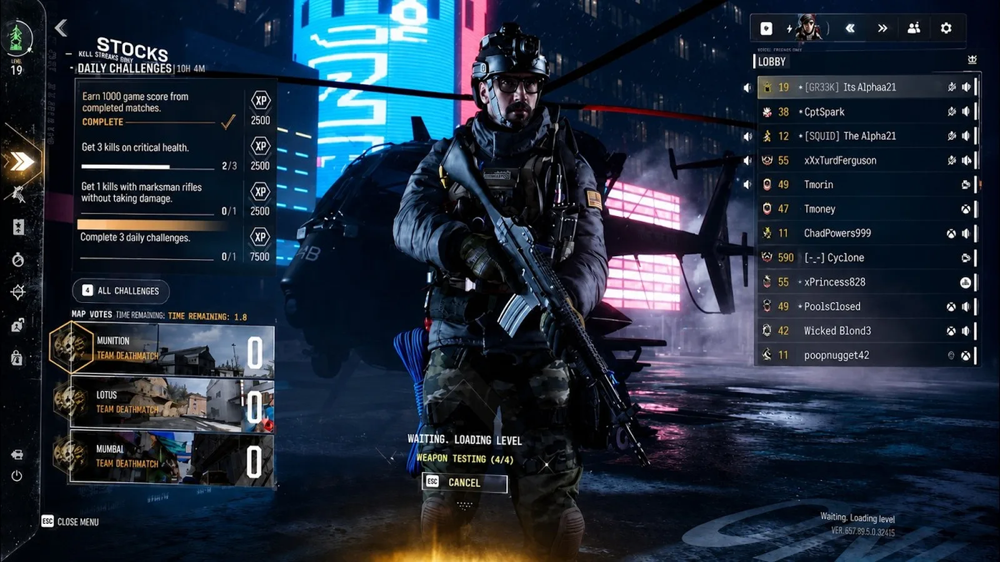
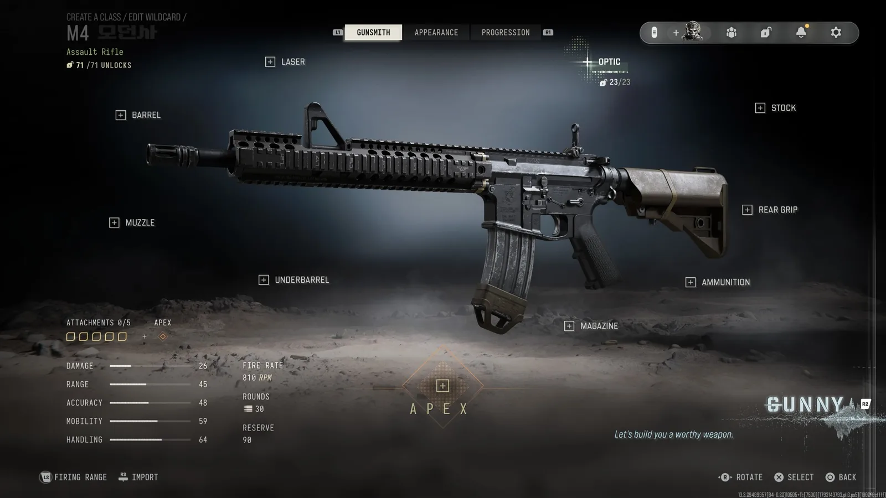
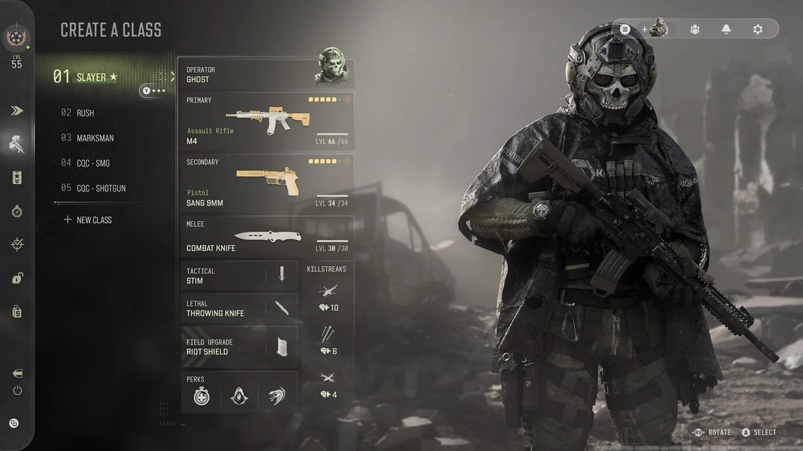
004 / WIREFRAMES
Without the key art, each screen is a ranking of what matters: one action on Home, a short list on Ready Up, and every slot on one screen in Create a Class.
005 / JOURNEY 01 — ENTERING A MATCH
Home opens on the mode you last played. The mode name is the largest thing on screen, with its format underneath (“6v6 · Core · 12 maps in rotation”), and Find Match is the only filled button. Space starts matchmaking from anywhere on the screen.
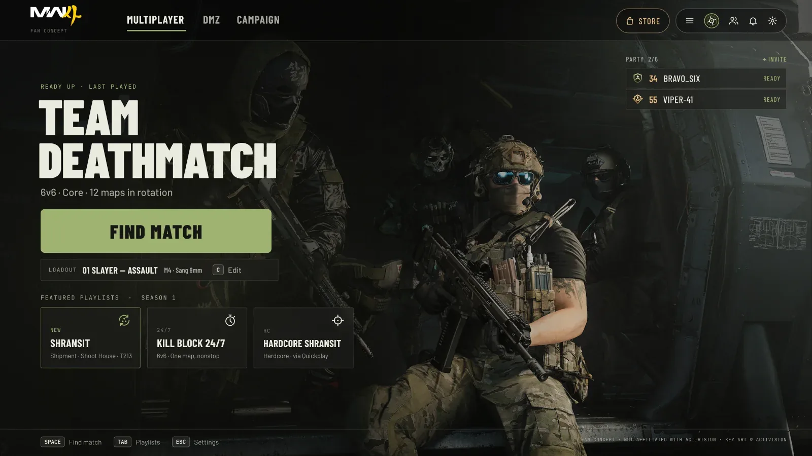
In the live lobby, the mode is a small corner label. Here it leads the screen, and everything else steps back so Find Match is the obvious next move.
The active class sits on one line under Find Match, and C opens it from Home or Ready Up. The intent is to settle your loadout before the match starts, not after.
Each party member shows a Ready state at the top right, so you can see whether everyone is set before you search.
006 / JOURNEY 02 — BROWSING GAME MODES
Featured playlists on Home each carry a type tag (New, 24/7 or HC) and a one-line description of what you’re getting, like “6v6 · One map, nonstop.” Ready Up lists your pinned playlists in order, with Browse All Playlists underneath and Q / E to switch between Multiplayer, DMZ and Campaign.
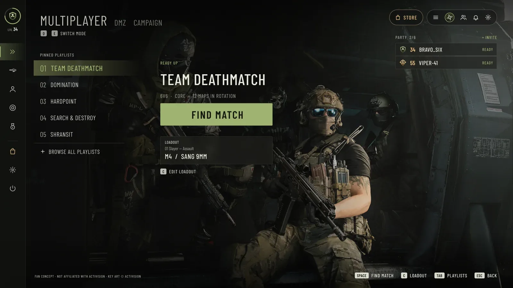
The tag and description tell you what a playlist is before you choose it, instead of after you load in.
The modes you play most stay in a short numbered list. Everything else is one step away in Browse All.
Q and E move between Multiplayer, DMZ and Campaign without leaving the screen.
007 / JOURNEY 03 — THE LOADOUT SYSTEM
Create a Class keeps every slot on one screen: operator, weapons, equipment, perks and killstreaks, with the selected weapon’s stats and attachments beside them. Opening the Gunsmith drops you into first person at the firing range, with a hotspot on each part of the gun. Choosing an attachment or camo animates onto the weapon.
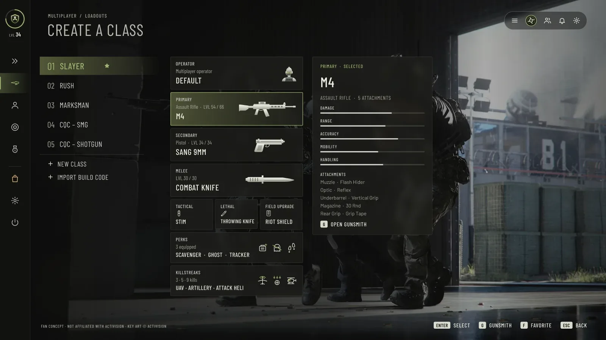
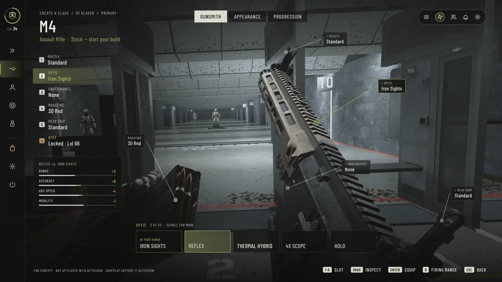
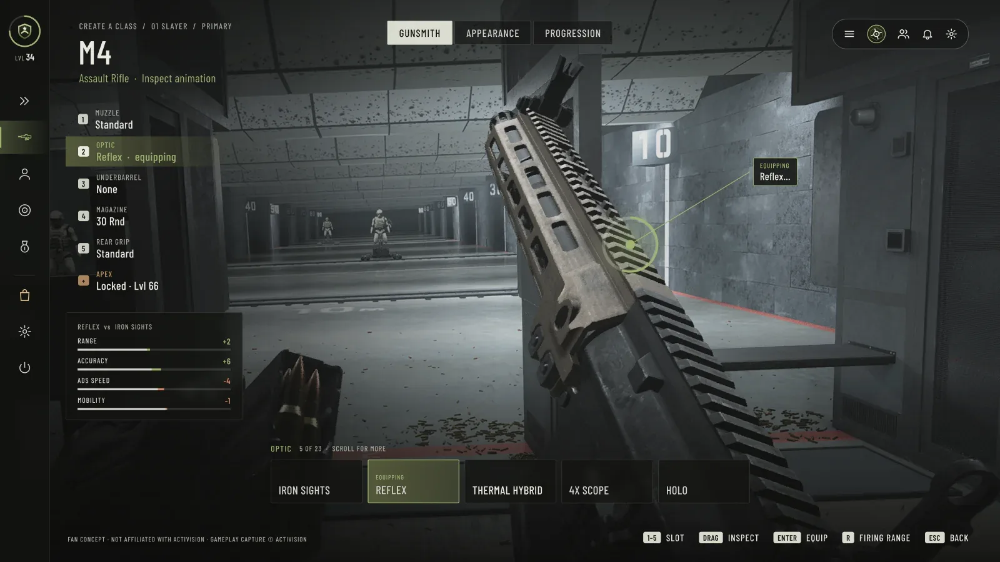
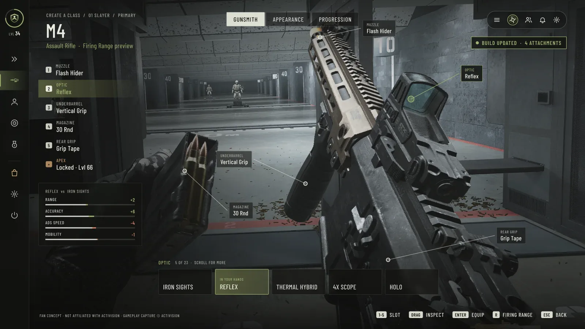
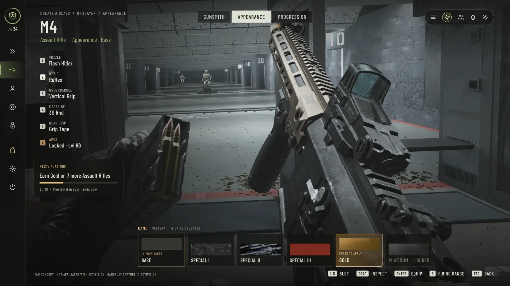
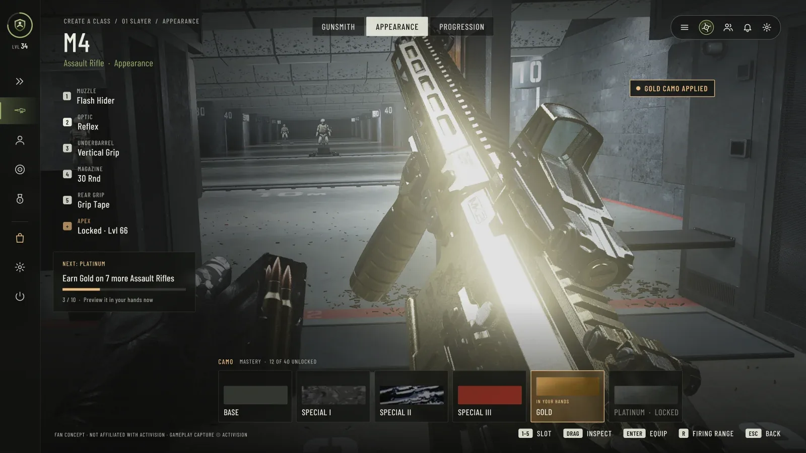
Gameplay captures © Activision. Overlays, labels and layout are my design.
Each stat bar shows the gain or cost against your current part, so you can judge a swap before you make it.
Every state uses the same layout, so only the gun and its labels move. You never lose your place between screens.
The next mastery tier and its requirement sit beside the camos.
008 / INTERACTIVITY AND RATIONALE
Pain Point 03 is about motion that slows players down, and this redesign adds motion. The rule I designed around: interactivity has to support the task. Common actions stay one key away, and animation happens on the gun, not between menus.
009 / REFLECTION
Time players from launch to matchmaking on the live lobby and on the prototype, and count how often they leave to fix a loadout.
Ask players to find a specific kind of match, then check whether they understood what the playlist was before they joined.
Compare edit time and mistakes between building in hand and a standard list, especially for experienced players who want speed.
CREDITS
Activision / Infinity Ward: Call of Duty and Modern Warfare names, MW4 logo, key art, gameplay and firing-range captures, camo textures, current-menu screenshots, playlist and killstreak names. This is an independent, unsolicited fan concept, not affiliated with or endorsed by Activision or its studios.
My work: the redesigned layouts and flows, the component kit, icons, prestige and player emblems, and the vector weapon, equipment, perk and killstreak art.